+150 fichas + 4 bônus por apenas R$ 97,00R$ 19,90 pagamento único · acesso imediato
★★★★★
Material visual para estudantes de Odontologia e cirurgiões-dentistas
Compra segura · 7 dias de garantia · Acesso vitalício
PRÉVIA DAS FICHAS
Veja o material por dentro
Fichas ilustradas que mostram a causa raiz de cada situação clínica, onde o fármaco age e o que fazer na prática, com hierarquia visual, esquemas e cores para facilitar a revisão.
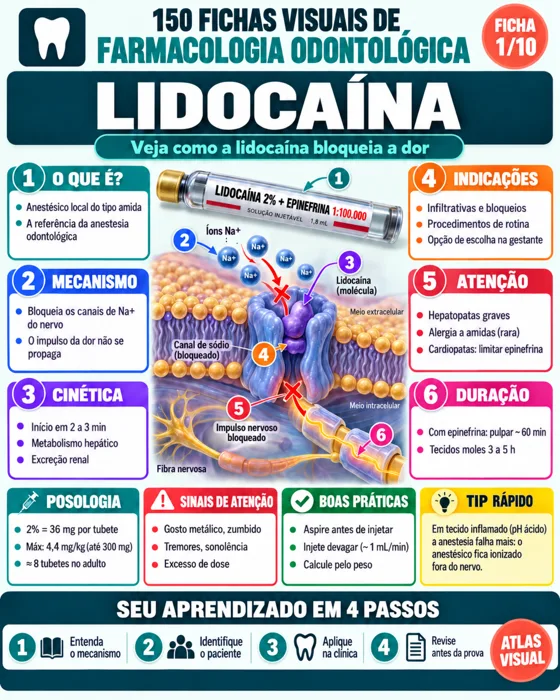
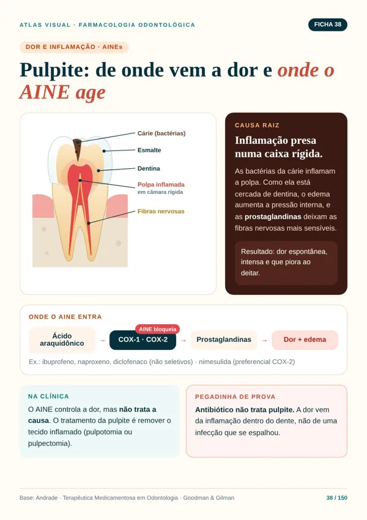
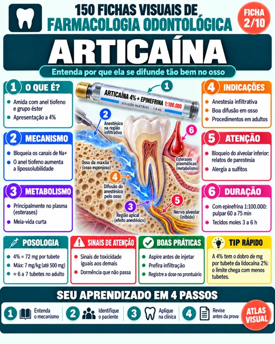
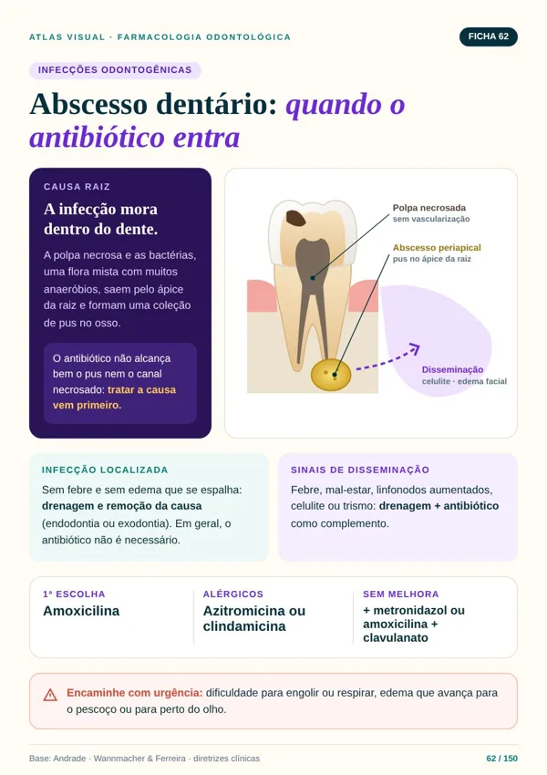
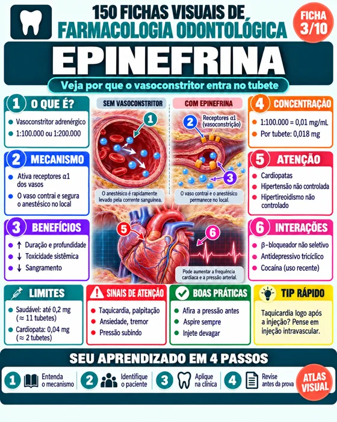
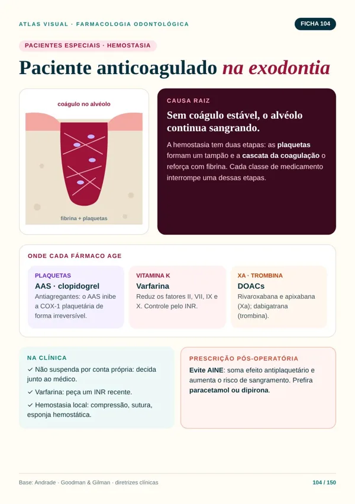
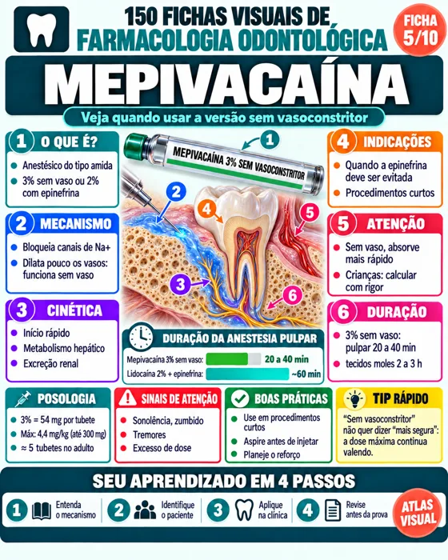
O que tem dentro
Mais de 150 fichas visuais de Farmacologia Odontológica, organizadas por classes e situações clínicas.
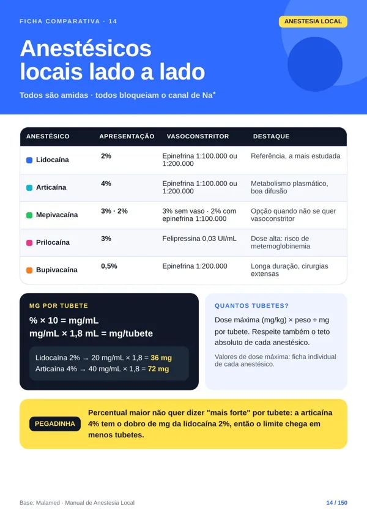
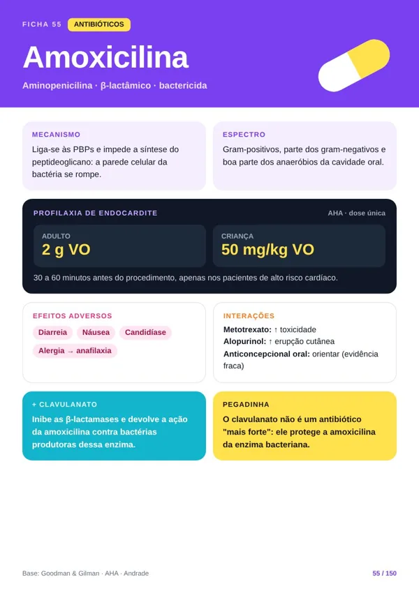
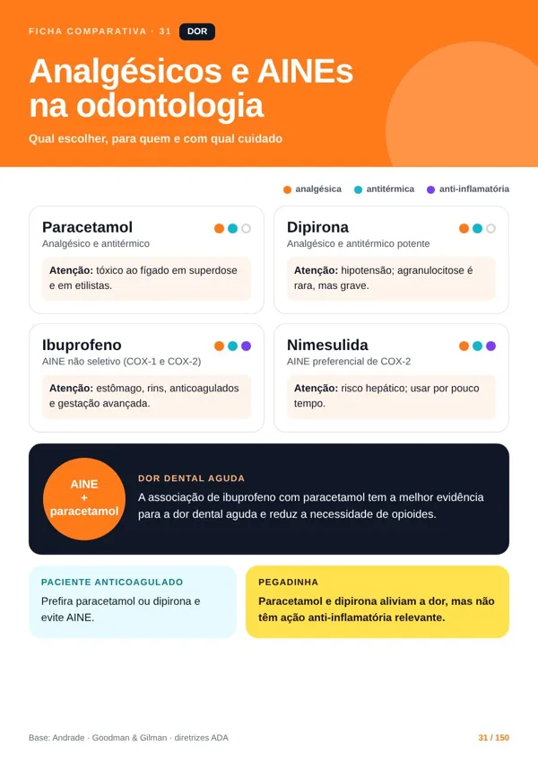
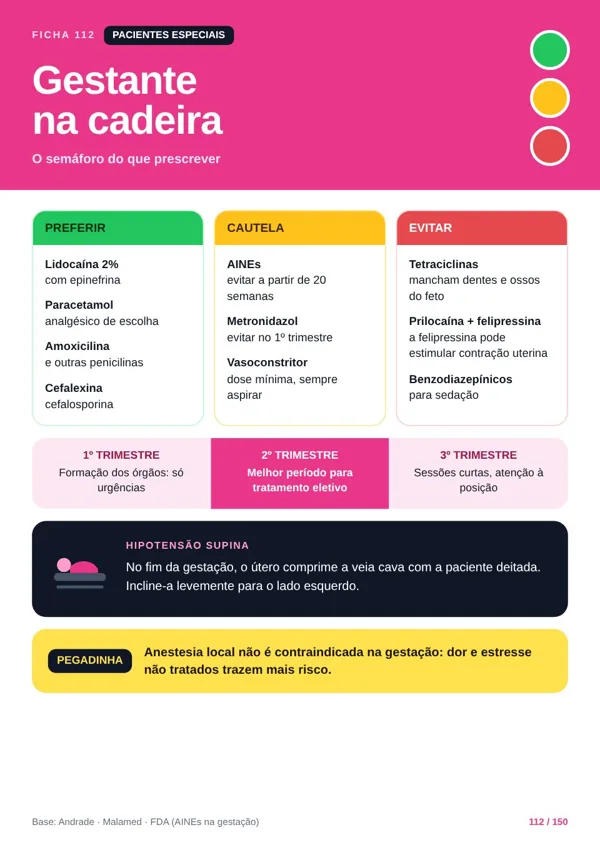
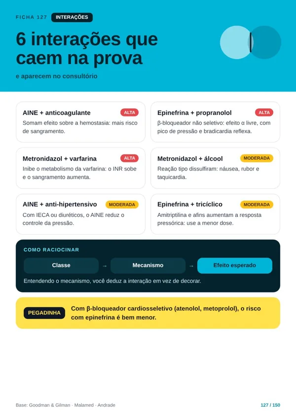
Anestésicos Locais
Vasoconstritores
Antibióticos e Infecções
Analgésicos, AINEs e Corticoides
Pacientes Especiais
Prescrição e Receituário
Ansiolíticos e Sedação
Efeitos Adversos e Interações
BASE CIENTÍFICA
Conteúdo baseado em referências reconhecidas
O Atlas foi estruturado com apoio de referências amplamente utilizadas no estudo da farmacologia e da odontologia.
Manual de Anestesia Local
Malamed
Terapêutica Medicamentosa em Odontologia
Andrade
Farmacologia Clínica para Dentistas
Wannmacher & Ferreira
As Bases Farmacológicas da Terapêutica
Goodman & Gilman
Bulário Eletrônico
ANVISA
Diretrizes clínicas
e literatura científica indexada
Informação organizada de forma visual para facilitar estudo, revisão e consulta.
VEJA COMO MUDA TUDO
Como sua rotina de estudos muda na prática:
Compare o esforço de estudar Farmacologia apenas por livros, aulas e bulas extensas com a facilidade de revisar através de fichas visuais organizadas.
✕Procurar a dose máxima do anestésico no livro com o paciente na cadeira.
✓Abrir a ficha do anestésico e ver os principais pontos em uma única página.
✕Tentar decorar antibióticos sem entender quando usar cada um.
✓Ver os antibióticos organizados lado a lado, com indicação e espectro.
✕Insegurança diante de hipertenso, gestante ou paciente anticoagulado.
✓Consultar as fichas de pacientes especiais com os pontos de atenção.
✕Misturar efeitos adversos e interações de fármacos diferentes.
✓Comparar os principais pontos de atenção de forma organizada.
✕Criar resumos enormes que precisam ser resumidos de novo antes da prova.
✓Ter material de revisão rápida no celular, tablet, computador ou impresso.
Compra 100% segura · Liberação imediata · Garantia de 7 dias
Garantia de 7 dias
Experimente o material com tranquilidade.
Você terá 7 dias para acessar e conhecer o Atlas Visual da Farmacologia Odontológica. Caso perceba que o material não é para você, basta solicitar o reembolso dentro do período de garantia.
Você não precisa assumir nenhum risco para conhecer o conteúdo.
Perguntas frequentes
Tire suas dúvidas sobre o material e o acesso:
Preciso já saber Farmacologia?+
Não. As fichas partem do básico — classe e mecanismo — e chegam na aplicação clínica.
Serve para quem já atende no consultório?+
Sim. Funciona como material de consulta rápida e revisão no dia a dia.
Tem cálculo de dose de anestésico?+
Sim, no módulo de anestésicos e no Bônus 1.
Posso usar para estudar para provas?+
Sim. As fichas foram pensadas para revisão rápida antes de provas.
Como vou receber o acesso?+
Por e-mail, logo após a confirmação do pagamento.
Posso estudar pelo celular?+
Sim, em celular, tablet ou computador.
Por quanto tempo terei acesso?+
Para sempre. Pagamento único, sem mensalidade.
Existe garantia de reembolso?+
Sim. Você tem 7 dias para pedir 100% do valor de volta.
Farmacologia na Odontologia não precisa continuar parecendo uma lista interminável de fármacos para decorar.
Quando você consegue visualizar a classe, o mecanismo, as diferenças, os cuidados e as interações, o conteúdo fica muito mais organizado — e a hora de prescrever deixa de ser um momento de insegurança.
Transforme os principais fármacos da odontologia em páginas rápidas de consultar, compreender e revisar.